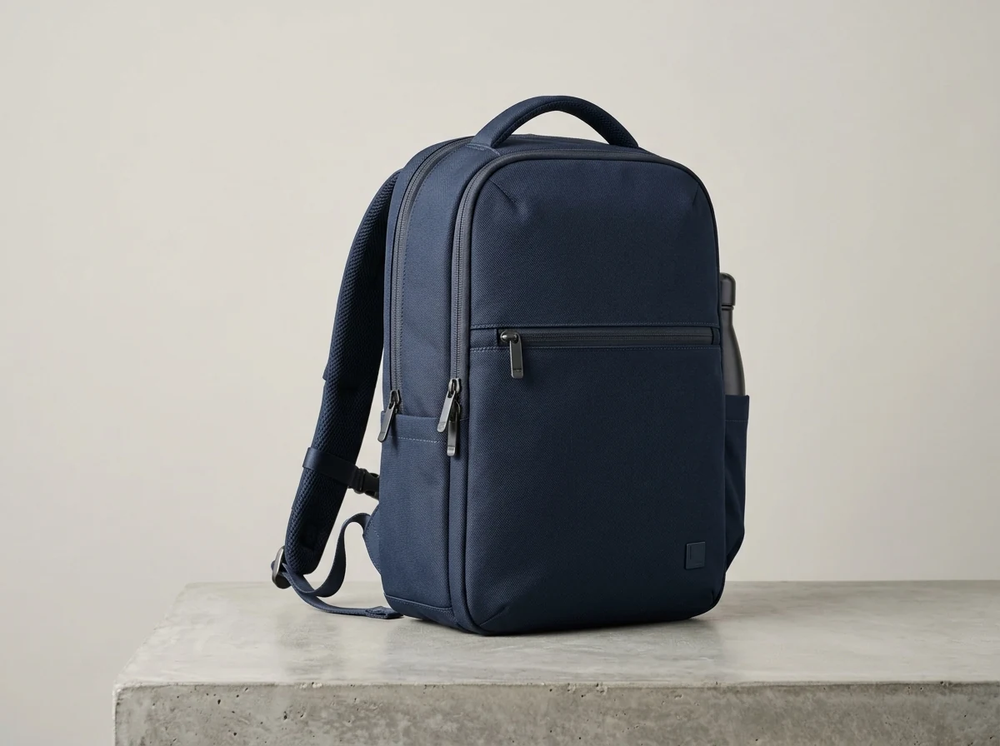
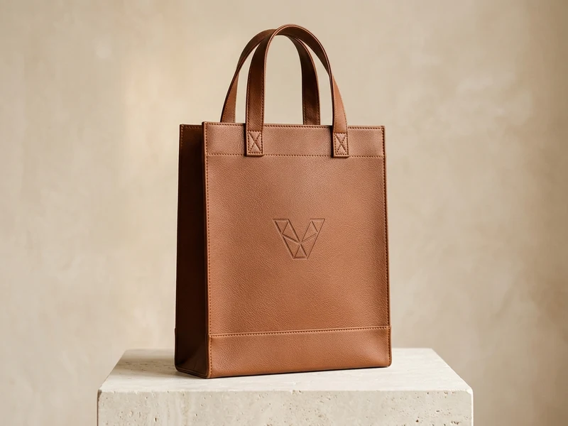
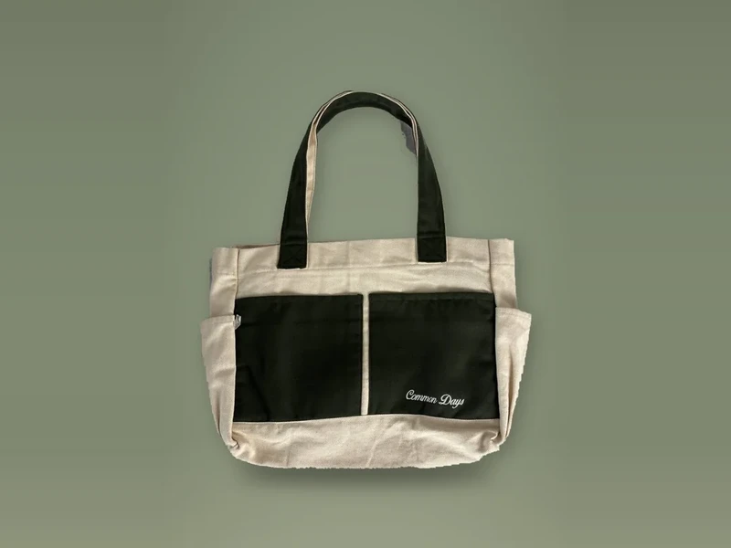
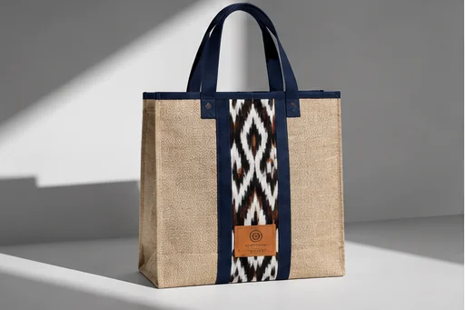

Model Best Seller
Model Best Seller
Katalog Pilihan Model Tas Konveksi
Katalog Model Fisik Tas & Goodie Bag
Eksplorasi ragam model fisik tas produksi workshop tangan pertama sakabag Malang: Totebag Kanvas, Ransel Diklat, Spunbond Promosi, Pouch, Selempang, Serut, hingga Tas Etnik Goni. Seluruh model dapat dikustomisasi dimensi, warna kain, dan teknik cetak sablon logo presisi.
Model Best Seller
 Executive Series
Executive Series
Totebag Denim Corporate
Executive Series
Totebag Denim Corporate Navy (DSE Series)

Heavy Duty Series Paling Ekonomis
Paling Ekonomis

Executive Luxury
Aksen Kulit Mewah
Custom Desain
Tas Tote Bag Kulit Sintetis (Faux Leather)
 Kombinasi Elegan
Kombinasi Elegan
 Kedinasan Series
Kedinasan Series
Goodie Bag Kedinasan
Kedinasan & Diklat
Goodie Bag Spunbond Kedinasan Hijau TNI AD (Pussenif)

Custom Spesial
Totebag Kanvas Custom
Two-Tone Series
Totebag Kanvas Two-Tone Saku Depan Ganda

Eco Heritage Series Kenang-kenangan Series
Kenang-kenangan Series
Goodie Bag Blacu
Cinderamata Dinas
Goodie Bag Blacu Katun Kenang-kenangan & Purna Tugas
ℹ
Buka Halaman Layanan →
Mencari Paket Layanan Berdasarkan Jenis Acara?
Tersedia layanan paket terpadu untuk Seminar Kit, Corporate BUMN, Event Pameran, Souvenir Pernikahan & Komunitas.
Punya Desain atau Pola Tas Sendiri?
Kami siap membuatkan tas dengan dimensi khusus, kombinasi bahan bertingkat, penambahan furing satin, saku beresleting, dan tali webbing kustom sesuai kebutuhan brand Anda.